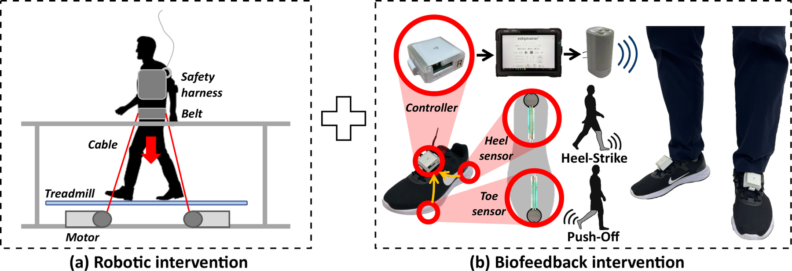
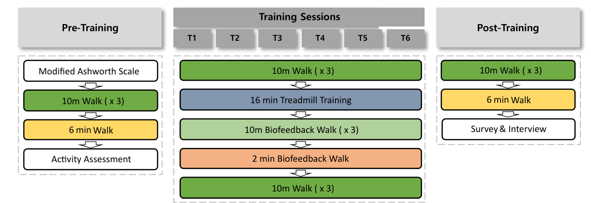
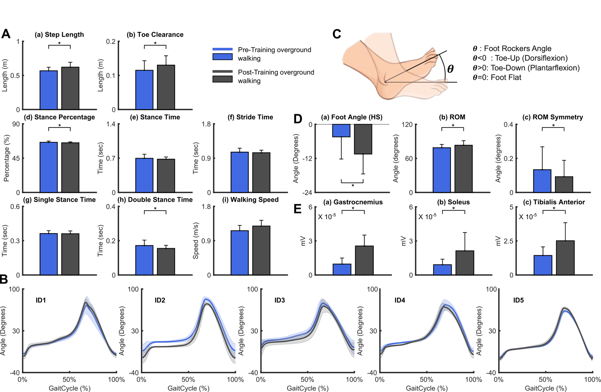
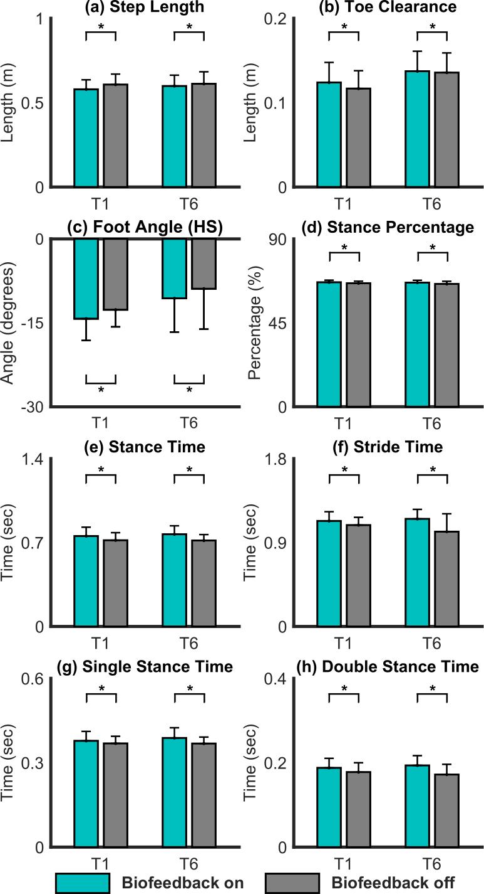

Rehabilitation Robotics · Gait Biomechanics · Biofeedback
Robot-Resisted Gait Training With Auditory Biofeedback in Adults With Cerebral Palsy
This project studied whether robot-resisted treadmill training followed by smart-insole auditory biofeedback could improve foot-rocker motion and overground walking patterns in adults with cerebral palsy.
Project overview
Many adults with cerebral palsy have difficulty with heel strike, foot clearance, and push-off during walking.
These walking patterns can reduce stability, step length, toe clearance, and overall gait efficiency.
My contribution
- Worked on experimental protocol development and biomechanics analysis for robot-resisted gait training and biofeedback-based overground walking.
- Analyzed spatiotemporal gait metrics, foot angle trajectories, joint kinematics, EMG activity, and participant feedback.
- Helped evaluate whether treadmill training effects transferred to overground walking.
Objectives
- Apply controlled downward robotic resistance during treadmill walking.
- Use smart-insole auditory cues to improve awareness of heel strike and push-off.
- Measure transfer of training effects to overground walking.
- Analyze step length, toe clearance, stance time, double stance time, foot angle, joint motion, and muscle activity.
- Assess participant perception of the robotic and biofeedback training.
Results
- Participants showed increased step length and toe clearance after training, suggesting improved forward progression and foot clearance.
- Stance percentage and double stance time decreased, indicating improved gait timing and weight transfer.
- Foot-angle results showed improved heel-strike posture and greater foot range of motion.
- Tibialis Anterior activity increased during early stance, supporting improved dorsiflexion and heel strike.
- Soleus and Gastrocnemius activity increased during late stance, supporting stronger push-off.
- Participants also showed increased hip and knee extension during stance, indicating a more upright lower-limb posture.
Tools and methods
Project figures
The figures below summarize the clinical robotics workflow, experimental protocol, and key biomechanics outcomes for the cerebral palsy gait-training project.

Concept overview. Robot-resisted treadmill walking was used to strengthen lower-limb control, while smart-insole auditory feedback reinforced heel strike and push-off during overground walking.

Training system. The robotic treadmill system applied controlled downward resistance through pelvic cables, and the smart insole provided separate auditory cues for heel-strike and push-off events.

Experimental protocol. Participants completed baseline testing, six training sessions combining treadmill resistance and biofeedback-assisted walking, and post-training gait assessment.

Overground walking outcomes. Post-training results showed improvements in step length, toe clearance, foot-rocker angle, and lower-limb muscle activation during heel strike and push-off.

Biofeedback effect. Comparing biofeedback-on and biofeedback-off walking showed how auditory cues changed step length, toe clearance, foot angle at heel strike, and stance timing across training sessions.
For public portfolio use, the safest images are figures you created yourself or figures you have permission to reuse.